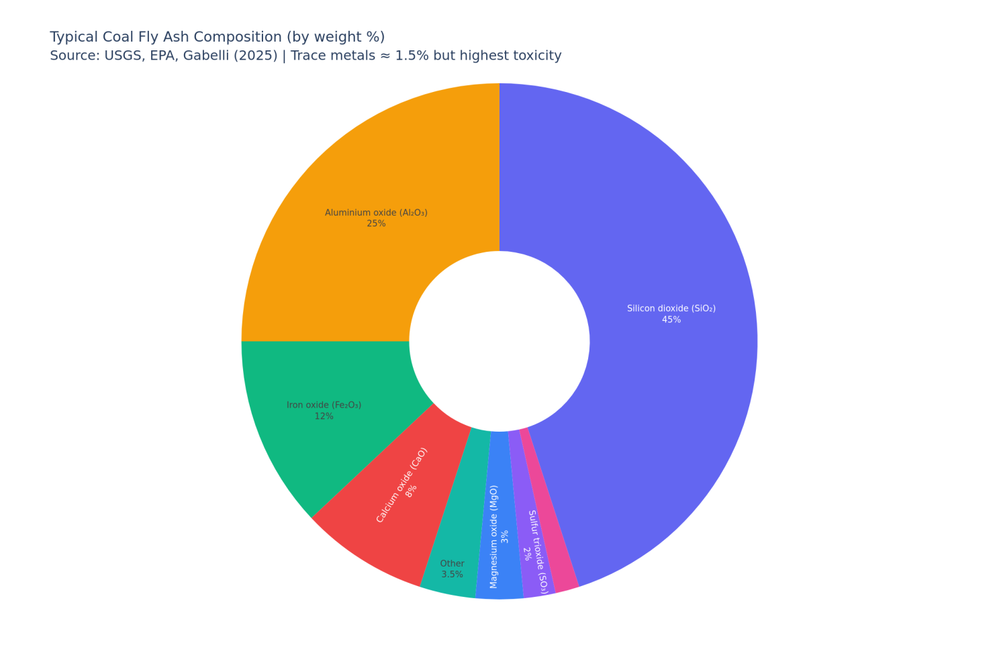
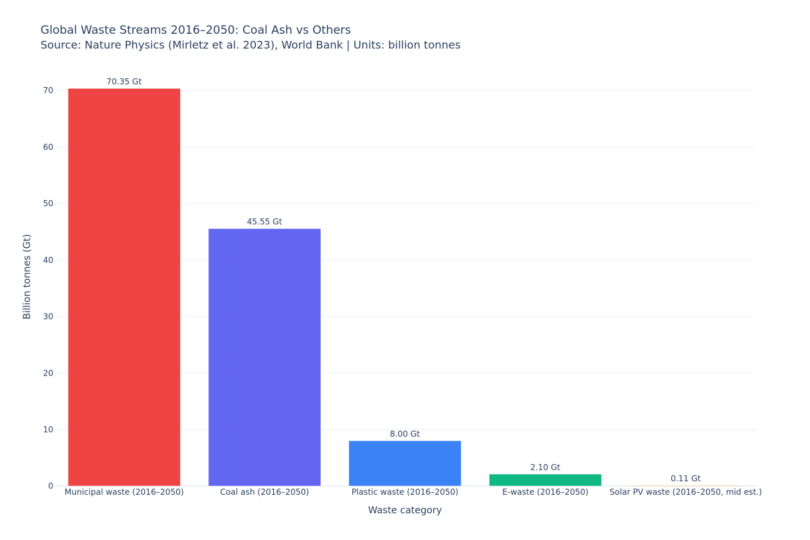
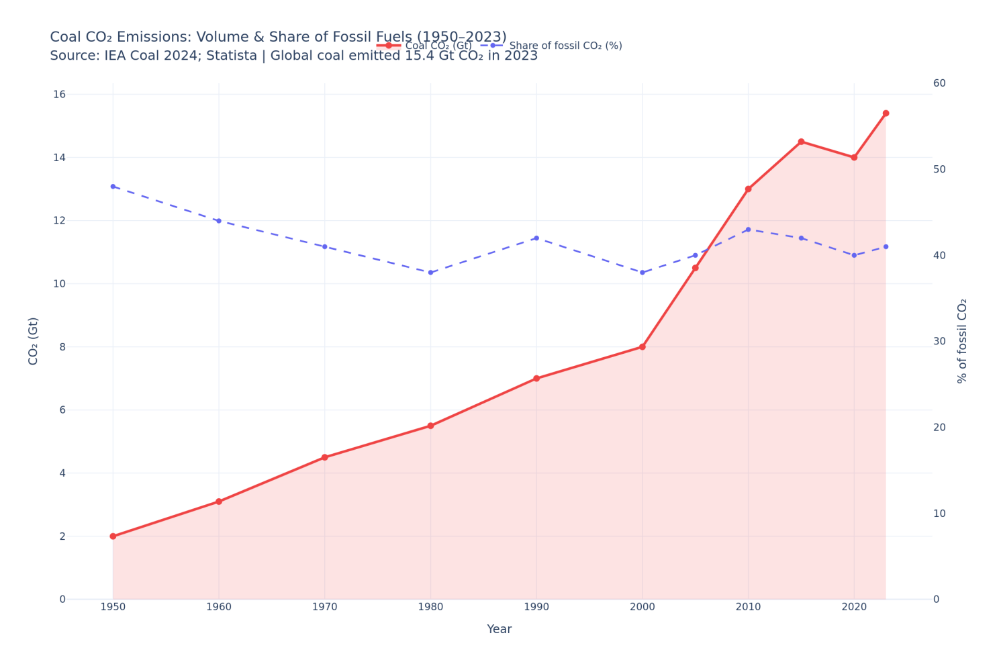
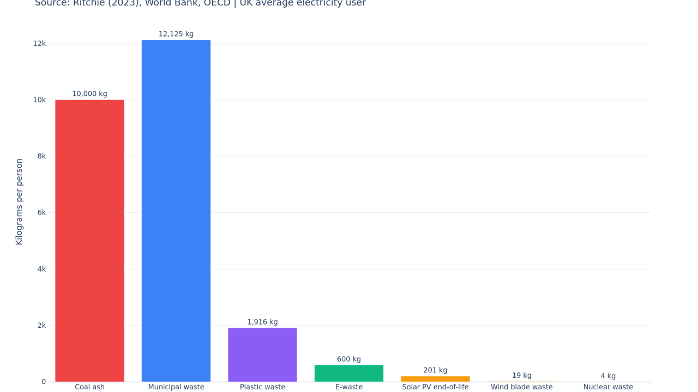

Coal ash, civilisational waste, and the thermodynamics of the energy transition.
What "Exporting Entropy" Actually Means
In thermodynamic terms, a society is a dissipative system: it maintains internal order (low entropy — institutions, infrastructure, complexity) by continuously importing free energy and exporting disorder. A lump of coal is a beautifully concentrated packet of chemical free energy assembled over 300 million years of geological compression. When you burn it, you extract that low-entropy gradient as heat and work, but you are left with two irrevocable entropy exports: gaseous CO₂ and SO₂ dispersed into the commons of the atmosphere, and the ash dumped into ponds, pits, and landfills downstream.
The trick that made fossil civilisation so economically intoxicating was that these entropy costs were externalised — paid for by future generations, downstream communities, and the global climate system — while the energy benefit was pocketed immediately.
Australia's "artificially high" societal health index is sustained precisely by this mechanism: coal and LNG exports allow the near-term thermodynamic costs to be exported alongside the commodity. The entropy isn't eliminated — it is offshored.
A Century of Global Coal Ash
Coal ash — formally coal combustion residuals (CCRs) — is the inorganic mineral fraction of coal that survives combustion. It comes in four main forms: fly ash (~60% of total), bottom ash (~20%), boiler slag (~5%), and flue-gas desulphurisation (FGD) gypsum (~15%). The yield ratio is roughly 10–15% of the coal mass burned in power generation — burning a tonne of coal leaves approximately 120 kg of ash.
Global coal consumption began the 20th century at roughly 900 million tonnes per year and climbed steadily, reaching ~2,500 Mt by 1970 and ~5,000 Mt by 2000. In 2024 it reached a record 9.1 billion tonnes, driven overwhelmingly by China, India, and Indonesia. Translating coal consumed into ash generated yields an estimated cumulative global production of somewhere between 50 and 70 billion tonnes of coal ash across the 20th century alone — a figure that dwarfs virtually every other anthropogenic solid waste stream in history.
9.1 Gt
Coal consumed globally, 2024 (record)
1.1 Gt
Coal ash produced annually (all CCR types)
70 Gt
Estimated cumulative 20th-century ash
The Composition: What Is in This Ash?

Typical coal fly ash composition by weight %. The bulk (~80–90%) is relatively inert aluminosilicate material — valuable as a cementitious substitute. The remaining ~10–15% contains mercury, arsenic, lead, cadmium, hexavalent chromium, selenium, beryllium, nickel, and vanadium. Source: USGS, EPA, Gabelli (2025).
The remaining ~10–15% is where the entropy cost becomes biologically acute. Coal ash routinely contains mercury, arsenic, lead, cadmium, chromium (particularly hexavalent Cr(VI)), selenium, beryllium, nickel, and vanadium. Arsenic and selenium have been found migrating off-site at nearly half of monitored US coal ash disposal sites, contaminating drinking water wells and waterways. Chronic exposure pathways are multiple: inhalation (respiratory and neurological damage), groundwater leaching (arsenic causes bladder and skin cancers; chromium VI causes stomach cancer), and bioaccumulation in fish populations — selenium accumulation has in some cases caused reproductive failure and local extinctions.
There is a radioactive dimension rarely acknowledged in public debate. Coal contains naturally occurring uranium, thorium, and their decay products — and these concentrate in the ash. Studies have found that coal ash is more radioactive than the low-level nuclear waste from many reactor operations.
Ash in the Context of Global Waste Streams

Global waste streams projected 2016–2050 (billion tonnes). Coal ash at 45.55 Gt is second only to municipal solid waste — and dwarfs all other industrial waste streams. Solar PV end-of-life waste: 0.11 Gt — 0.24% of coal ash. Source: Nature Physics (Mirletz et al. 2023), World Bank.
Municipal solid waste is projected to accumulate 70.35 billion tonnes between 2016 and 2050. Coal ash — the residue of just one industrial process — comes in second at an estimated 45.55 billion tonnes over the same period. Plastic waste projects to around 8 billion tonnes. E-waste from electronic devices to roughly 2 billion tonnes. And all photovoltaic solar panel waste, across all panels expected to be retired worldwide by 2050, sits at a mid-estimate of barely 0.11 billion tonnes — 0.24% of the coal ash figure. As Hannah Ritchie summarised from the Mirletz et al. commentary: solar PV waste is "at least 99.6% less than coal ash and municipal waste."
Carbon: The Atmospheric Entropy Export

Coal CO₂ emissions: volume (red, left axis) and share of total fossil fuels (blue dashed, right axis), 1950–2023. From ~2 Gt/yr to 15.4 Gt/yr — a 7.7-fold increase. Coal's share of fossil CO₂ remains ~41% despite massive growth of natural gas. Source: IEA Coal 2024; Statista.
The gaseous entropy export — carbon dioxide — is the one most consequential for planetary systems. Global coal combustion emitted approximately 15.4 Gt of CO₂ in 2023, representing around 40–41% of all fossil fuel emissions and over 25% of total anthropogenic greenhouse gas output. When you burn coal, you are converting a highly ordered, concentrated hydrocarbon lattice into dispersed carbon dioxide molecules spread across the global atmosphere: maximum entropy in the carbon cycle. The atmosphere has a finite capacity to re-export this entropy (as infrared radiation to space), and the rate at which we are loading it has begun to exceed that capacity, causing the system to warm. This is the thermodynamic root of climate change: we have overwhelmed the planet's entropy export pathway.
The Entropy Cost of Renewables: A Very Different Balance Sheet

Waste allocated per person (UK average electricity user, 25 years). Coal ash: 10,000 kg. Solar PV end-of-life: 201 kg. Wind blades: 19 kg. Nuclear: 4 kg. The entropy cost of renewable energy is different in kind, not merely in degree. Source: Ritchie (2023), World Bank, OECD.
Energy source
Solid waste per MWh
vs Coal
Waste type
Coal
89 kg / MWh
—
Toxic: heavy metals, radioactive material
Solar PV
1.67 kg / MWh
53× less
Aluminium, glass, silicon (95% recyclable)
Wind
0.16 kg / MWh
556× less
Fibreglass / CFRP composite — inert, non-toxic
Nuclear
0.031 kg / MWh
2,871× less
Vitrified waste; contained; retrievable
The qualitative entropy profile of renewable waste is also categorically different. Wind turbine blades are composed largely of fibreglass and carbon-fibre composite — inert, non-toxic, non-leaching materials classified as non-hazardous in the US and Europe. Solar panels are ~95% recyclable aluminium, glass, and silicon. Approximately 85–100% of wind turbine structural components (steel, copper, concrete) are recyclable at current technology.
The honest caveat: renewables have their own upstream entropy costs — silicon wafer manufacturing, steel tower smelting, rare earth element refining for some wind turbines, and lithium/cobalt/nickel mining for battery storage, often under weak regulatory regimes. These are real costs. But lifecycle analysis consistently shows the total entropy cost over an installation's operational life is 20 to 50 times lower in CO₂ terms than coal, and the solid waste comparison is orders of magnitude more favourable.
The entropy trajectory of renewables points toward circularity — the ability to close material loops — whereas coal combustion is an inherently one-way, open-ended entropy export with no retrieval mechanism.
The CAMS Framing: Entropy Export as Civilisational Strategy
CAMS Reading
From the CAMS framework's perspective, this is not merely an environmental accounting exercise — it is a diagnostic of societal metabolic strategy. Nations that sustain high internal Ψ (deliberative coherence) by exporting entropy — through coal ash dumped in impoundment ponds, CO₂ dispersed globally, or toxic mining waste offshored to the Democratic Republic of Congo or Indonesia — are borrowing thermodynamic capacity from systems that lack the political voice to refuse.
The R ratio (Φ/Ψ) in the model is ultimately a measure of whether a society is paying its thermodynamic bills internally or charging them to others.
The great transition to renewables is, in this light, not merely a technical energy substitution but a structural shift in the civilisational entropy accounting — from dispersive, one-way, externalised disposal toward contained, retrievable, potentially circular material flows. The entropy cost does not disappear in renewables, but it becomes localised, bounded, and potentially manageable. Not diffused into global commons whose damage compounds across geological timescales.
The irony of the current political discourse, in which decommissioned wind blades in landfills are held up as evidence of renewables' waste problem, while 1.1 billion tonnes of coal ash per year escapes public notice, is a perfect example of type 3 informatory entropy: a threat signal being disabled by the noise of selective framing. Recognising these kinds of asymmetry is, in CAMS terms, what separates a deliberative (Ψ) civilisational response from a reactive (Φ) one.
The thermodynamic accounting
Every productive system must export entropy somewhere — for two centuries, fossil civilisation sent it to the atmosphere, water table, and landscape
Coal ash: ~1.1 billion tonnes per year globally; cumulative 20th century: 50–70 billion tonnes; more radioactive than low-level nuclear waste
Toxic load: arsenic, mercury, lead, cadmium, hexavalent chromium — migrating off-site at nearly half of monitored US disposal sites
Coal ash 2016–2050: 45.55 Gt (second only to municipal waste globally); solar PV end-of-life over same period: 0.11 Gt — 0.24% of coal ash
Solid waste per MWh: coal 89 kg; solar 1.67 kg (53×); wind 0.16 kg (556×); nuclear 0.031 kg (2,871×)
Coal CO₂: 15.4 Gt in 2023 — 41% of all fossil fuel emissions; 7.7× growth since 1950; the root cause is thermodynamic, not political
CAMS reading: nations exporting entropy are borrowing thermodynamic capacity from those without political voice; the energy transition is a structural shift in civilisational metabolic strategy toward circularity
Type 3 informatory entropy: wind blade discourse vs 1.1 Gt coal ash/year — selective framing disabling the threat signal; deliberative vs reactive mode